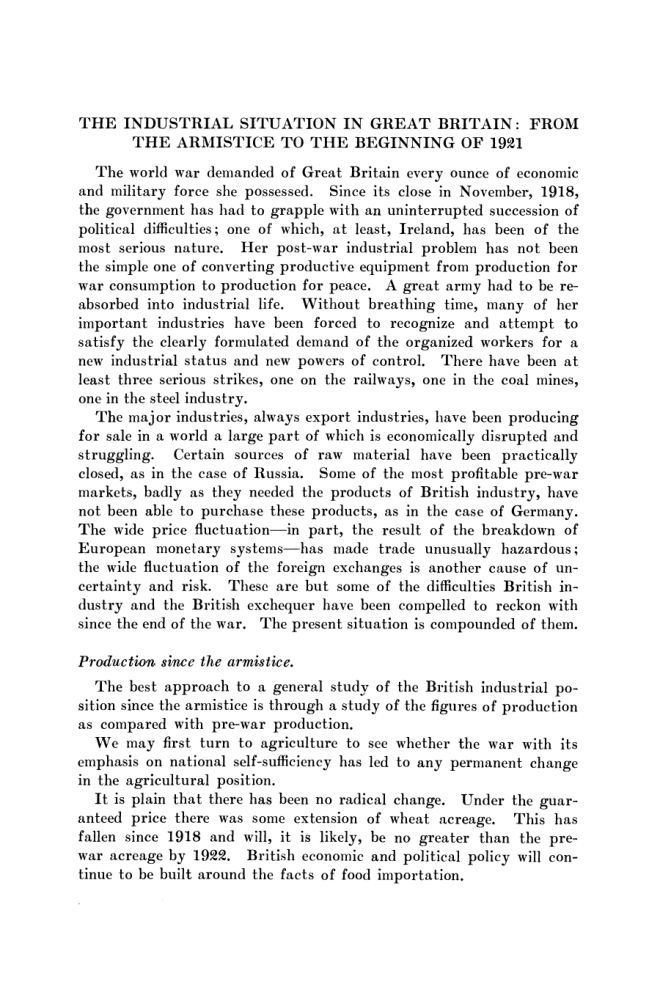

Feis e a indústria britânica entre a deflação e as greves
Leitura: 8 min
Herbert Feis, de Harvard, mede a produção, o comércio, as finanças e o desemprego britânicos de 1919 ao início de 1921 e conclui que a volta ao padrão-ouro depende de um acordo sobre salários.


Em fevereiro de 1921, 8,5% dos membros dos sindicatos que informavam ao governo britânico estavam desempregados, a maior proporção desde o inverno de 1908-1909. O número aparece perto do fim do artigo de Herbert Feis, de Harvard, publicado na American Economic Review de junho de 1921, e resume o ponto a que chegou a economia britânica dois anos depois do armistício: uma recuperação desigual, interrompida no fim de 1920 por uma depressão que coincidiu com a tentativa de deflação.
Feis abre com a lista das dificuldades. A guerra exigira da Grã-Bretanha todas as suas forças econômicas e militares; desde novembro de 1918, o governo enfrentava uma sucessão de problemas políticos, entre eles a Irlanda. Não se tratava apenas de converter fábricas da produção de guerra para a de paz: era preciso reabsorver um grande exército e atender à exigência dos trabalhadores organizados por novo status e mais controle. Houve pelo menos três greves graves. As indústrias exportadoras vendiam para um mundo desorganizado, a Rússia estava fechada, a Alemanha não podia comprar, e preços e câmbios oscilavam.
Quanto a produção caiu desde a guerra?
A agricultura, diz Feis, não mudou de forma radical. Sob o preço garantido, a área de trigo cresceu, mas já recuava e deveria voltar ao nível de antes da guerra em 1922; a política britânica continuaria construída sobre a importação de alimentos. Em 1913, o país produzira 22 milhões de quintais de cereais panificáveis e importara 122 milhões.
O carvão é o caso central. A produção média de 1909 a 1913 fora de 287 milhões de toneladas por ano; em 1919, de 230 milhões. As exportações, de 73 milhões de toneladas no período anterior à guerra, foram de 25 milhões em 1920, embora seu valor tenha sido maior que em 1913. Para a Rússia, as vendas caíram de 5.998 mil toneladas em 1913 para 92 mil em 1920; para a Alemanha, de 8.952 mil para 13 mil.
Os mineiros, acrescenta, acusavam os donos de restringir a produção para manter os preços, e enquanto não houvesse acordo que lhes garantisse que mais produção não significaria mais lucro, a perspectiva continuaria ruim. Na siderurgia, a situação era melhor: as usinas foram ampliadas na guerra, e a produção de aço de 1920 superou a de 1913, que fora o ano recorde, embora fevereiro de 1921 tenha marcado o ponto mais baixo desde o armistício. Na construção naval, a tonelagem lançada em 1920, de 2,005 milhões de toneladas, superou a de 1913, mas a participação britânica na construção mundial de navios mercantes caíra de 58% em 1913 para 35% em 1920.
Os têxteis sentiram a depressão com mais força. No fim de 1920, metade dos teares de algodão estava parada, e os fabricantes restringiam a produção a três ou quatro dias por semana; ainda assim, o algodão respondeu por 26% do valor das exportações britânicas no ano. Na lã, os preços da matéria-prima caíram a menos da metade dos de março. Feis registra ainda a observação do gerente da Caledonian Railway: o tráfego de 1920 foi menor que o de 1913, de 330 milhões de toneladas ante 367 milhões, com 30% mais empregados.
O comércio exterior voltou ao equilíbrio?
As emissões de capital mostram um afastamento do investimento externo que o autor julga temporário: em 1913, 82% do novo capital fora aplicado no exterior; em 1920, 15%. No comércio de mercadorias, o excesso de importações caiu de 784 milhões de libras em 1918 para 378 milhões em 1920. Medido a preços de 1913, porém, o quadro é menos favorável: as importações retidas eram 12% menores que antes da guerra, e as exportações de produtos britânicos, cerca de 36% menores. Os mercados próximos recebiam parcela maior das exportações, e as compras dos Estados Unidos eram grandes, enquanto as vendas para lá eram pequenas.
O desconto da libra em relação ao dólar atingiu o máximo em novembro de 1920 e recuou para 21% em fevereiro de 1921. As moedas dos aliados e dos ex-inimigos continentais, por sua vez, se depreciavam continuamente em relação à libra.
As finanças públicas permitiam deflacionar?
O orçamento de 1919-1920 teve despesa de 1.665 milhões de libras e déficit de 326 milhões. Para 1920-1921, a estimativa previa receita de 1.418 milhões, despesa de 1.184 milhões e saldo de 234 milhões, com a ressalva de que a receita incluía 311 milhões de receitas especiais, como a venda de suprimentos, e a despesa, 345 milhões de encargos da dívida. Pela primeira vez desde 1913, a receita igualou a despesa. A dívida nacional, de 711 milhões de libras em agosto de 1914, chegou a 8.079 milhões em dezembro de 1919 e recuou para 7.817 milhões em janeiro de 1921; a dívida flutuante, porém, subira para 1.570 milhões.
A discussão sobre deflação, diz Feis, centrava-se nas notas do Tesouro emitidas desde 1914, que contavam como reserva dos bancos e haviam permitido ampliar o crédito, e cujo volume parara de crescer. O índice de preços por atacado da Economist, com base 100 em novembro de 1918, chegou a 134 em março de 1920 e caiu para 83 em fevereiro de 1921. O custo de vida, medido pela Labour Gazette em relação a 1914, subiu até novembro de 1920 e passou a cair.
Quem pagaria o ajuste?
O desemprego se tornou o centro da questão. A nova lei de seguro-desemprego estendera a cobertura a cerca de 12 milhões de trabalhadores, com benefício semanal de 15 xelins para os homens, e os empregadores iniciavam o primeiro esforço organizado de redução geral de salários, com dois argumentos: a queda do custo de vida e a concorrência do continente. Os líderes sindicais se opunham. Feis cita J. R. Clynes, que representava os setores mais moderados.
“O trabalhismo rejeitará qualquer proposta de redução geral de salários com o objetivo de reduzir preços.” (“Labor will reject any proposal for a general reduction in wages with the object of securing a reduction in prices.”)
Os lucros industriais, nota o autor, foram altos até o fim de 1920: em mais de trezentas grandes empresas acompanhadas pela Economist, cresceram em média 32,6% sobre 1919, embora a tributação fosse pesada. Feis prevê conflito sério se a depressão continuar e os empregadores não aceitarem lucros menores, e conclui que o Tesouro dificilmente voltaria ao padrão-ouro sem uma redução de salários negociada com os sindicatos. Num pós-escrito, registra a greve do carvão de 1921, em que os mineiros pediam uma escala nacional de salários e um fundo nacional de lucros, e o risco de adesão de ferroviários e transportadores. Aposta, ainda assim, num acordo.
“O súbito desmoronamento da atual estrutura industrial não é coisa em que se possa pensar.” (“the sudden wreck of the present industrial structure is not to be thought of”)
Na minha leitura
Na minha leitura, o artigo de Feis mostra que a estatística de produção, sozinha, não explica a situação britânica de 1920. Os números de carvão, aço e comércio indicam uma recuperação desigual, mas o autor insiste que as causas da queda da produtividade são impossíveis de separar com clareza: falta de mercados, jornada menor, equipamento gasto, acordos de preço entre empresas e a atitude dos trabalhadores aparecem misturados nos mesmos dados.
O ponto econômico central é a ligação entre deflação e salários. Equilibrar o orçamento era condição necessária, mas a volta ao padrão-ouro exigia que os preços caíssem, e os preços só cairiam o suficiente se os salários nominais também caíssem. A política monetária, nesse quadro, dependia de uma negociação distributiva que ela não podia resolver por si.
Glossário
- Quintal (hundredweight)
- medida britânica de peso, equivalente a 112 libras-peso.
- Balanço geral
- saldo das contas externas que soma ao comércio de mercadorias os fretes, rendas e serviços.
- Dívida flutuante
- dívida pública de curto prazo, renovada com frequência.
- Notas do Tesouro (currency notes)
- papel-moeda de uma libra e dez xelins emitido pelo Tesouro a partir de 1914.
- Triple Alliance
- aliança entre os sindicatos de mineiros, ferroviários e trabalhadores dos transportes.
Fontes
- The Industrial Situation in Great Britain: From the Armistice to the Beginning of 1921 — Herbert Feis (Harvard University) (pp. 252–267). JSTOR · Internet Archive (PDF)
- Edição completa, com os demais artigos: Nº 170 do Arquivo.
Documento em domínio público (EUA, publicado antes de 1931), via JSTOR Early Journal Content e Internet Archive. Resumo e comentário do autor deste site, sem afiliação com a American Economic Association. Encontrou um erro? Escreva: a correção é publicada no próprio texto, com data.
← Miller e o coeficiente de reservas que avisa tarde ↑ Nº 170 · Miller, o Federal Reserve e a comercialização agrícola